Префектура Гифу · Восточное Мино · дорога Накасэндо
Накасэндо в Гифу: почтовые станции Восточного Мино, каштановые сладости и керамика
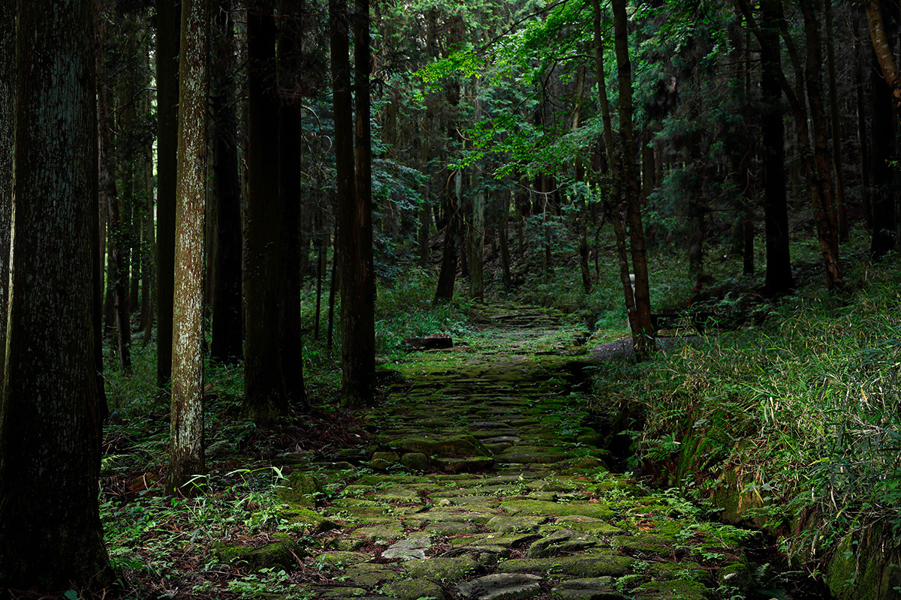
На горной дороге Накасэндо, полной серпантинов и крутых перевалов, 17 почтовых станций Гифу были для путников оазисом. Мы прошли по Восточному Мино, чтобы увидеть, что осталось от эпохи Эдо в истории, еде и ремёслах.
Дорога
Оазис на горном тракте
Накасэндо соединяла Эдо и Киото через горы центральной Японии. Из её 69 почтовых станций 17 стояли на землях нынешней префектуры Гифу: от Магомэ, 43-й по счёту, до Имасу, 59-й. Мы прошли по восточной части этого отрезка, по Восточному Мино. В Накацугаве, которую обошли войны, сохранились особенно ценные документы.
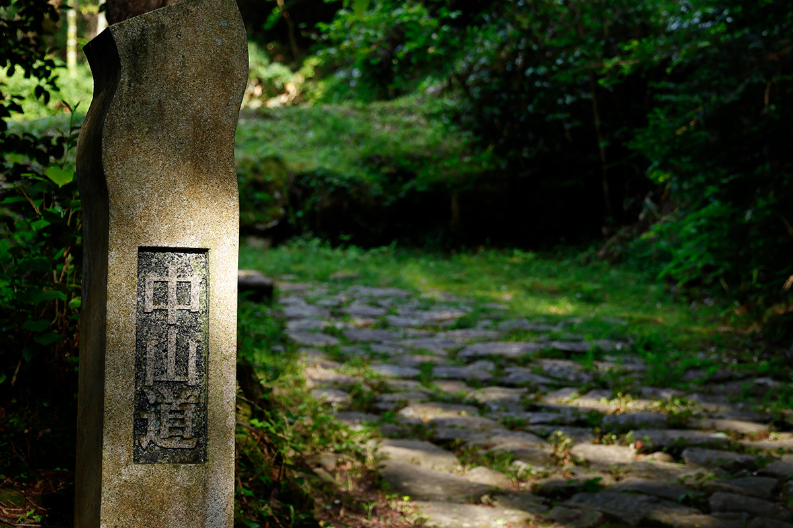
За крутыми перевалами путника ждала Накацугава, крупнейшая почтовая станция Восточного Мино. Для идущих по Накасэндо это было место отдыха, а для горного края ещё и узел, где собирались новости. Так объясняет сотрудник исторического музея Накасэндо в Накацугаве.
«Здесь жило много учёных и врачей, учившихся в Эдо и Киото. Говорят, когда к Японии пришли „чёрные корабли“, новости из Эдо доходили сюда очень быстро. Сохранились документы, которые, по-видимому, влияли на политику страны. Формально город принадлежал княжеству Овари, но держался он на хондзине (главной гостинице для знати) и торговых домах. Город особенный»
сотрудник исторического музея
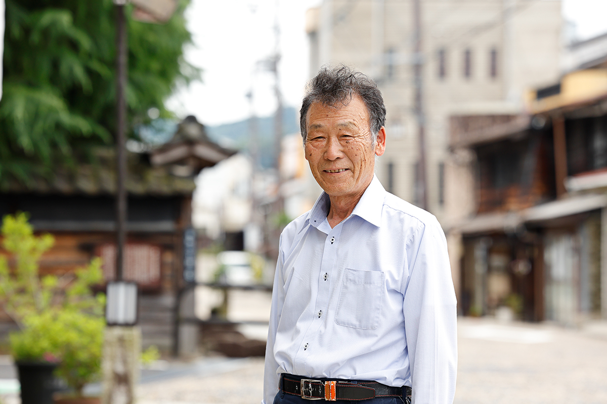
Накацугава выросла на перекрёстке: на север дорога вела через Хиду в Канадзаву, на юг в Нагою. На Накасэндо не закрывали переправы при высокой воде, как на Токайдо, главной дороге вдоль побережья, и её считали сравнительно безопасной. По этой артерии острова Хонсю шли люди, товары и новости. По словам сотрудника музея, её история начинается ещё в эпоху Асука, с древней дороги Тосандо.
«Об этом пишут ещё в „Нихон сёки“. Тосандо почти совпадала с нынешней Накасэндо, и уже в эпоху Асука по ней ходило немало людей. Даже железная дорога Тюо идёт почти тем же путём»
сотрудник исторического музея
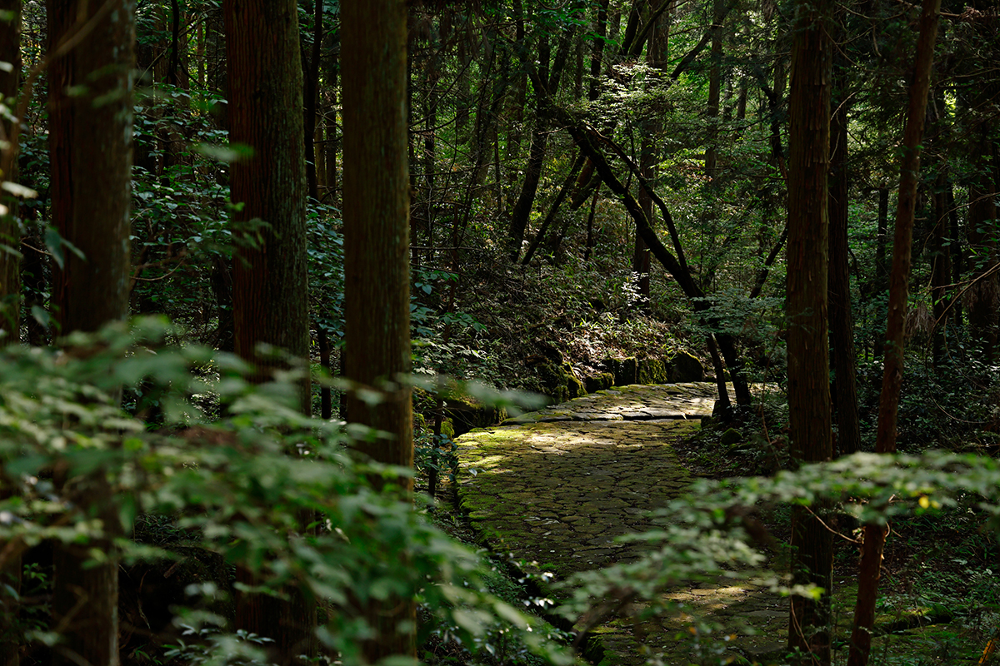
По Накасэндо ходили не только князья, ехавшие в Эдо по обязательной службе, и торговцы. Она вела и паломников к святилищу Исэ, и тех, кто шёл восходить на гору Онтакэ. Почтовые станции давали ночлег, еду и припасы.
«Накацугава разбогатела на кипарисе из долины Кисо и шелководстве, и здесь было почти всё. Для жителей Эдо и Киото горы центральной Японии, наверное, были настоящей сокровищницей»
сотрудник исторического музея
Здесь продавали лекарства, одежду и всякую утварь, а в глубину гор привозили даже солёную рыбу из заливов Тояма и Микава. В амбаре рёкана «Итикава» на станции Ои, который работает уже около 400 лет, нашли сушёные морские водоросли.
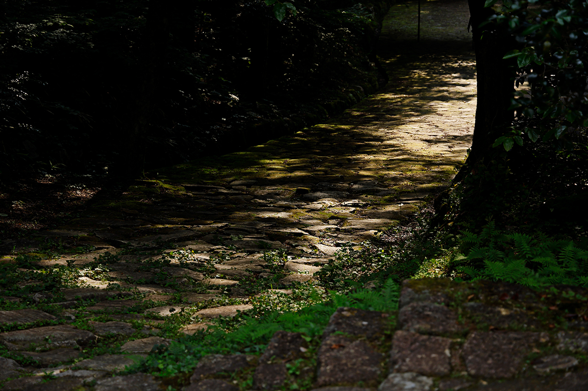
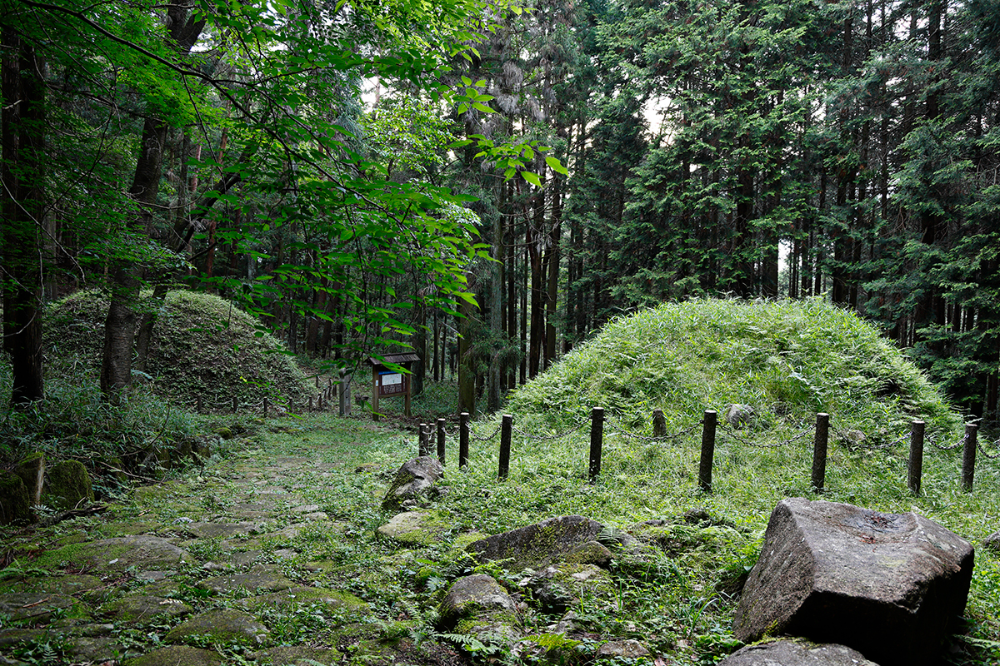
Музей
Исторический музей Накасэндо в Накацугаве
Музей хранит десятки тысяч документов двух семей станции Накацугава: семьи Итиока, которая держала хондзин, гостиницу для знати, и семьи Хадзама, ведавшей перевозками. В центре экспозиции поезд принцессы Кадзу-но-мия (1846–1877), младшей сестры императора Комэй (1831–1867). В 1861 году она ехала из Киото в Эдо, чтобы стать женой сёгуна, и её процессия в 20 000 человек прошла по Накасэндо.
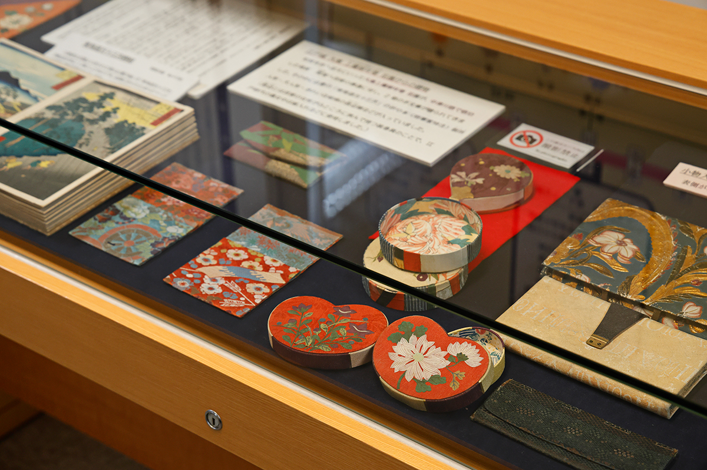
Есть и документы о том, как Накацугава стала закулисной сценой большой политики, в том числе старые бумаги о переговорах в Накацугаве, которые подтверждают пребывание здесь Когоро Кацуры (1833–1877). Этот самурай княжества Тёсю позже под именем Такаёси Кидо стал одним из лидеров реставрации Мэйдзи.
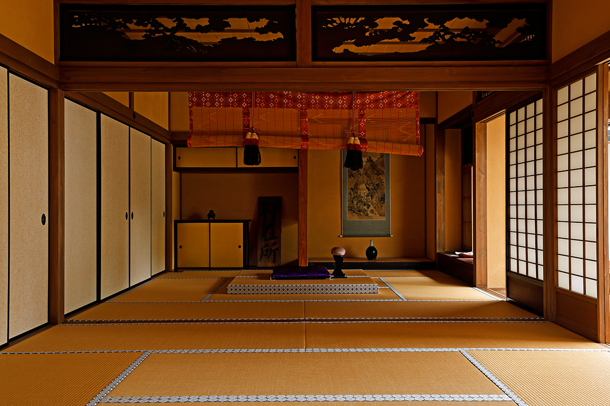
Поезд принцессы растянулся на 77 км, и за его блеском стоял тяжёлый труд носильщиков и служителей. Помнить об этом стоит, разбираясь в истории Накасэндо, которую называли «дорогой принцесс».
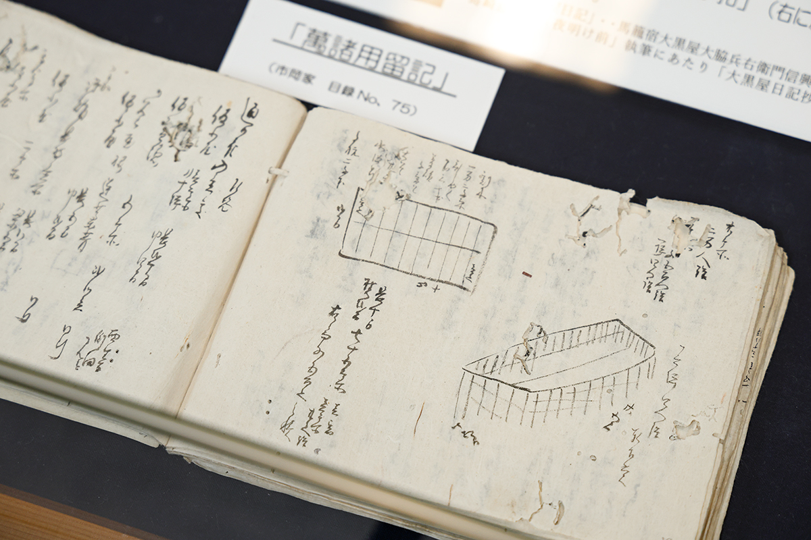
Исторический музей Накасэндо в Накацугаве
- Адрес
- префектура Гифу, Накацугава, Хонмати, 2-2-21
- Телефон
- +81 573-66-6888
- Часы работы
- 9:30–17:00 (вход до 16:30)
- Выходные
- понедельник
- Цены / Вход
- бесплатно
Где остановиться
Рёкан «Итикава» на станции Ои
На станции Ои стоял 41 постоялый двор, больше, чем на любой другой станции Мино. До наших дней дожил только один: рёкан «Итикава», известный своей кухней. Около 400 лет назад основатель открыл здесь постоялый двор, и нынешняя хозяйка представляет уже 16-е поколение. «Итикаву» называют старейшим из сохранившихся постоялых дворов Японии. Здесь бывали поэты Хакусю Китахара (1885–1942) и Бокусуй Вакаяма (1885–1928), два известных поэта начала XX века.
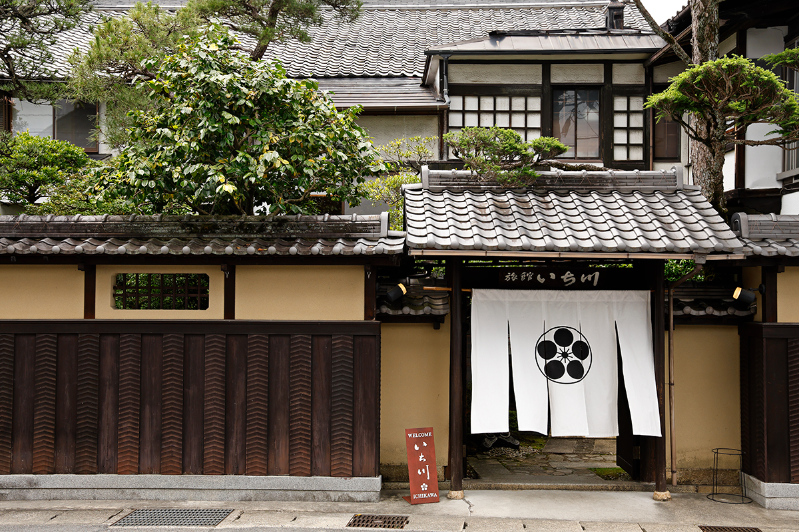
Это удобная база для прогулок по станциям Восточного Мино. Номер «Мацу» рассчитан на двоих, и в нём хорошо просто закрыться от мира на день-другой.
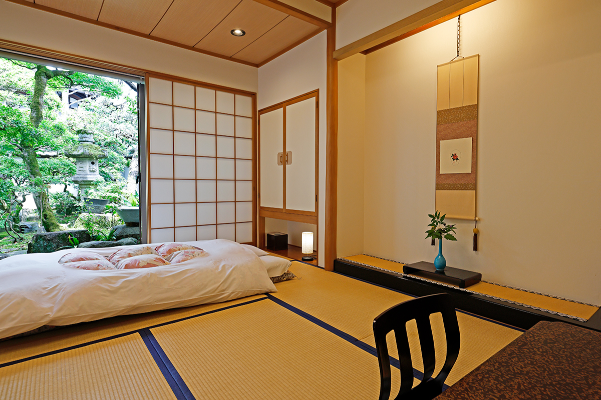
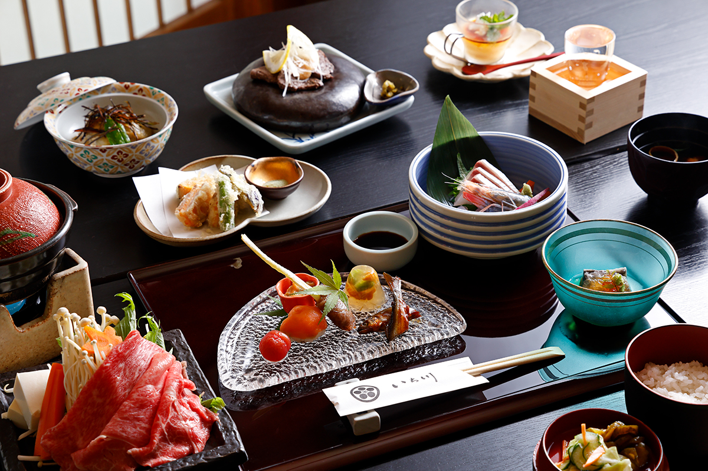
Рёкан «Итикава»
- Адрес
- префектура Гифу, Эна, Оимати, 95-1
- Телефон
- +81 573-25-2191
- Номера
- 10
- Цены / Вход
- от 21 000 иен за ночь в номере с ужином и завтраком (налог и обслуживание включены)
- Заезд / выезд
- 16:00–18:00 / 10:00
- Как добраться
- около 5 минут на машине от съезда Эна скоростной дороги Тюо, около 7 минут пешком от станции JR Эна
Сладости
Каштаны Восточного Мино
Дух старой дороги живёт не только на почтовых станциях. Его чувствуешь и по пути, и в облике городков. Например, на тракте между станциями Накацугава и Ои, в бывшей деревне Сакамото, которая входит в Накацугаву. Здесь сохранились место чайного хондзина, который выполнял ту же роль, что хондзин и вакихондзин, и узкие по фасаду, но глубокие городские дома.
Ещё около 150 лет назад это была главная улица округи, где один за другим стояли лавки зонтов, гэта и лекарств. Мастерская гэта потом стала обувным магазином, и улица жила и после 1926 года, но с новой станцией и объездной дорогой центр переместился. Прежнего оживления больше нет, зато по старому тракту ходят любители пеших прогулок, и дорога своей притягательности не потеряла.
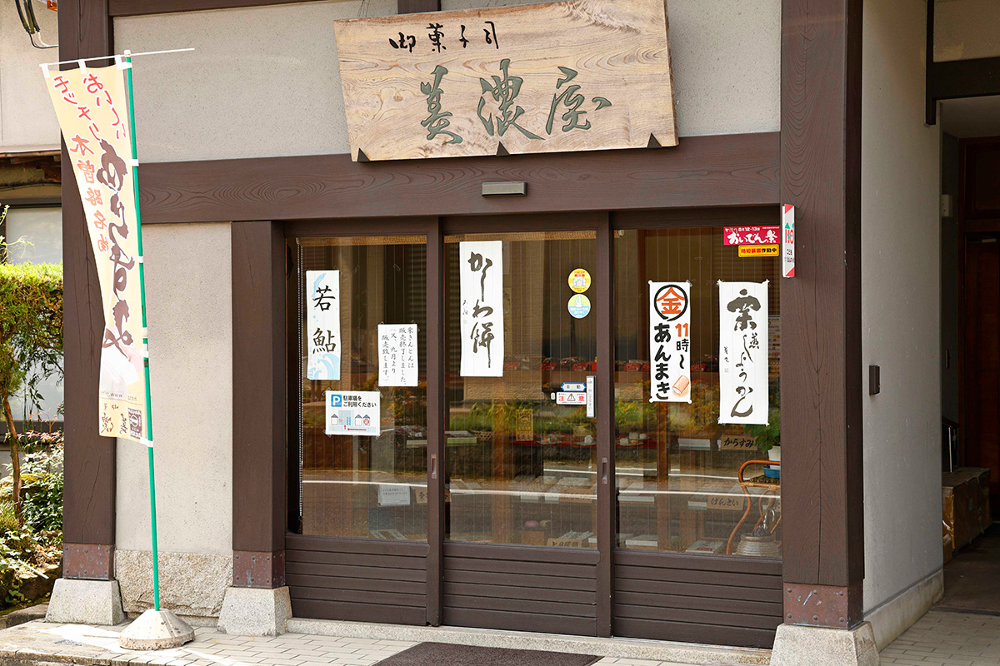
О былом богатстве говорит и то, как много здесь лавок вагаси, японских сладостей, связанных с самурайской школой чайной церемонии. Главная сладость Восточного Мино делается из каштанов: это курикинтон, сладкое каштановое пюре.
«Откуда взялись курикинтон, никто точно не знает. Но каштаны здесь росли всегда, а после 1868 года появились даже бэнто с рисом и каштанами, которые продавали на станциях. Так или иначе, каштаны ели в том или ином виде»
хозяин кондитерской «Миноя»
На предгорных наносных равнинах, где трудно выращивать рис, людей кормили местные японские каштаны, а среди богатых купцов процветала чайная церемония. Видимо, отсюда и пошли местные сладости.
Кондитерская «Миноя»
«Миноя» открылась в 1899 году и стоит на том самом тракте между Накацугавой и Ои, который когда-то был главной улицей, поэтому сюда часто заходят те, кто гуляет по старой дороге. Рецепты почти не изменились со дня основания. Вкус держится на самих продуктах и запоминается с первого раза.
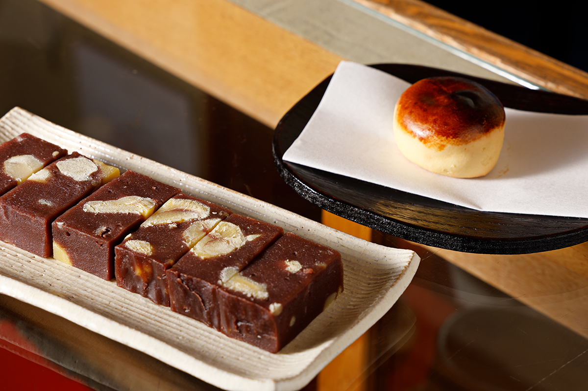
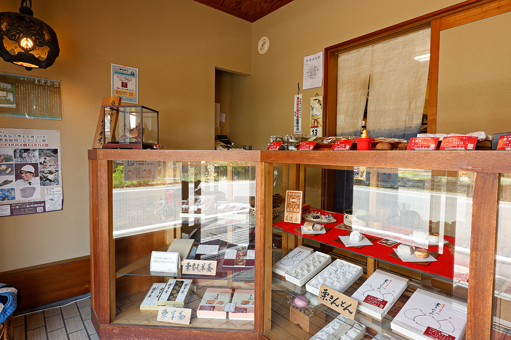
Кондитерская «Миноя»
- Адрес
- префектура Гифу, Накацугава, Насугава, 1208-5
- Телефон
- +81 573-68-2038
- Часы работы
- 8:30–18:00
- Выходные
- среда (с сентября по декабрь без выходных)
- Сайт
- minoya.jp
Ужин
«Якэяма», бывшее убежище Когоро Кацуры
Ресторан местной кухни занимает место старинного ресторана рётэй, где проходили переговоры в Накацугаве. Овощи и горные травы сюда приносят прямо с грядки и из леса, свежее, чем собранное утром, поэтому меню каждый день своё и зависит от того, что дала природа.
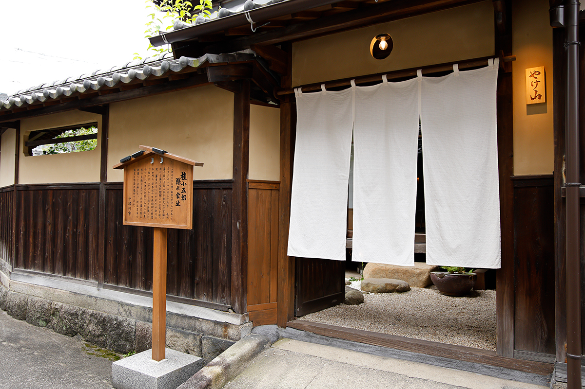
Все приправы тоже местные. Как и в старину, когда мирин было не достать, блюда подслащивают амадзакэ, сладким рисовым напитком с местной сакэварни.
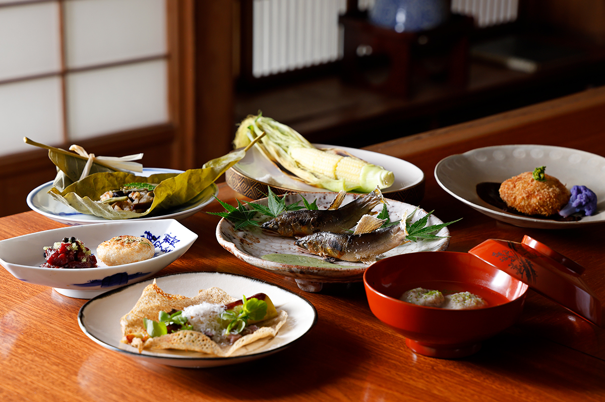
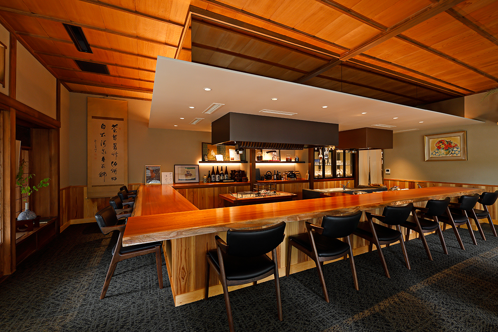
«Якэяма»
- Адрес
- префектура Гифу, Накацугава, Синмати, 4-11
- Телефон
- +81 573-64-2882
- Часы работы
- с 18:00, только по предварительной записи
- Выходные
- нерегулярно
Ремёсла
Керамика Мино: история и новые идеи
Ещё одна опора, которой Мино поддерживало страну, это его керамика: её поставляли даже в главную и западную цитадели замка Эдо.
«Изделия Сэто знамениты, но и в Восточном Мино были свои печи. Есть надёжные записи о том, что посуду отсюда возили на продажу и на восток, и на запад»
сотрудник исторического музея
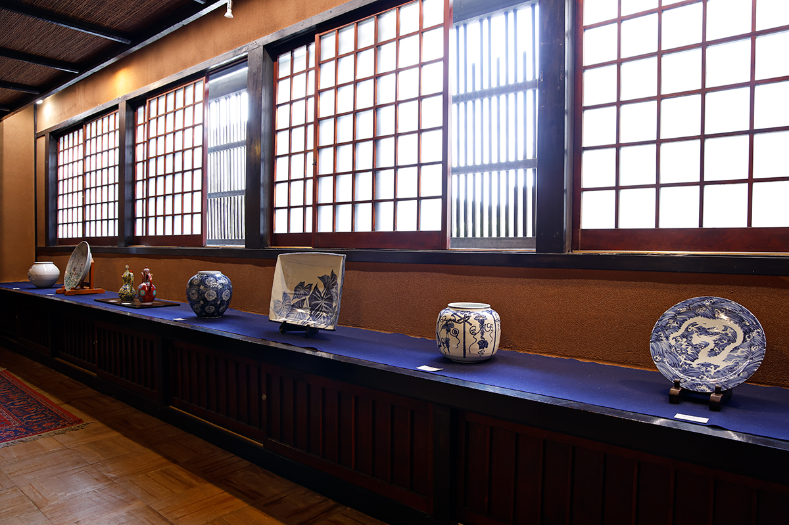
Всю повседневную посуду, которой пользовались в Эдо, называли «сэтомоно», то есть «пришедшее со стороны Сэто», будь она из Мино или из Сэто. Позднейшие раскопки показали, что кое-что из того, что считали посудой Сэто, на самом деле обожжено в Мино. Значит, керамика Мино на деле поддерживала пищевую культуру Эдо.
Многое из старой истории знали только те, кто жил в то время, но искать её следы и есть главная радость путешествия по старой дороге. Почтовые станции Гифу поддерживали Эдо и политикой, и торговлей, и по ним стоит пройти, чтобы найти сюжеты, спрятанные в японской истории.
Печь «Кобэй-гама»
Печь «Кобэй-гама» работала на замок Эдо и насчитывает 220 лет истории. Её музей с работами мастеров разных поколений и архив получили две звезды зелёного путеводителя Michelin. Здесь можно узнать, например, что стиль Орибэ, один из самых известных стилей керамики Мино, сложился под влиянием персидской керамики, и посмотреть на историю керамики через старое, чтобы понять новое.
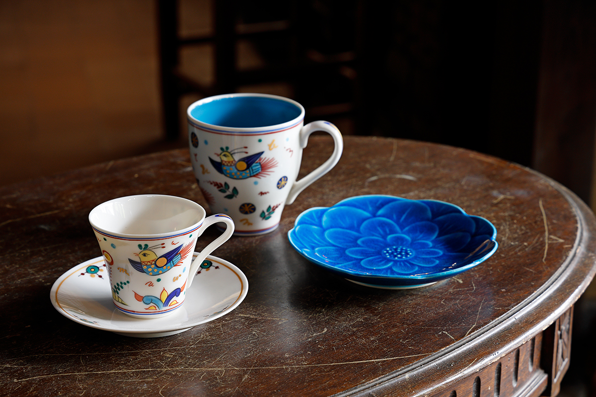
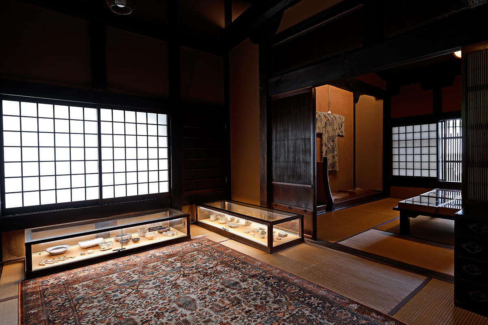
Печь «Кобэй-гама»
- Адрес
- префектура Гифу, Тадзими, Итинокурамати, 4-124
- Телефон
- +81 572-22-3821
- Часы работы
- 9:00–17:00 (по воскресеньям, праздникам, 2-м и 4-м субботам с 10:00)
- Цены / Вход
- 300 иен, старшеклассники и студенты 150 иен, до средней школы включительно бесплатно
KOYO BASE
Керамику Мино обычно представляют как японскую посуду, а компания KOYO начинала с классической посуды для американских закусочных на экспорт. KOYO BASE это её новое пространство, задуманное как «комплекс впечатлений вокруг посуды».
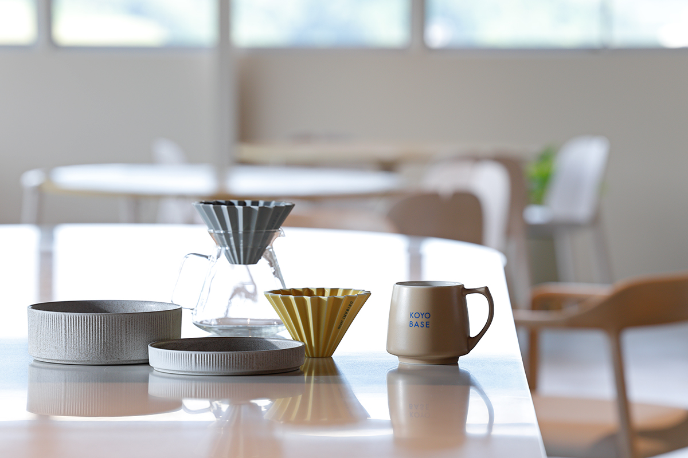
Здесь можно пройти по фабрике, поесть, купить посуду, приятно провести время и поучиться: так виден весь путь от глины до обеденного стола.
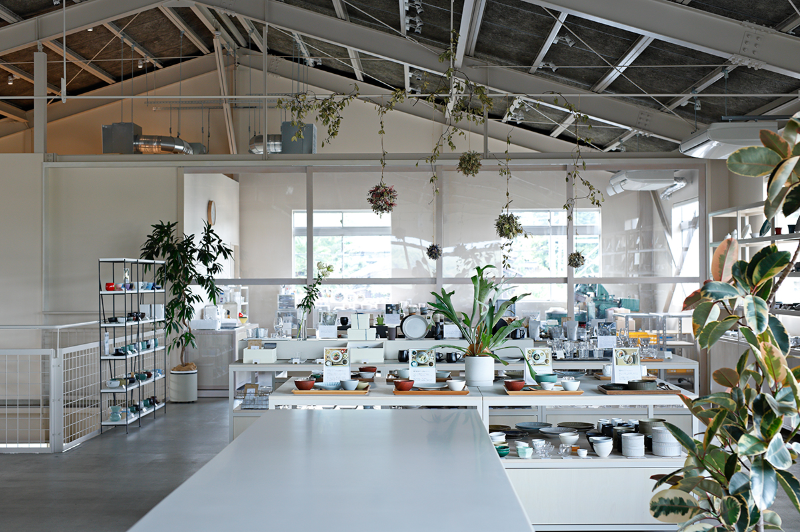
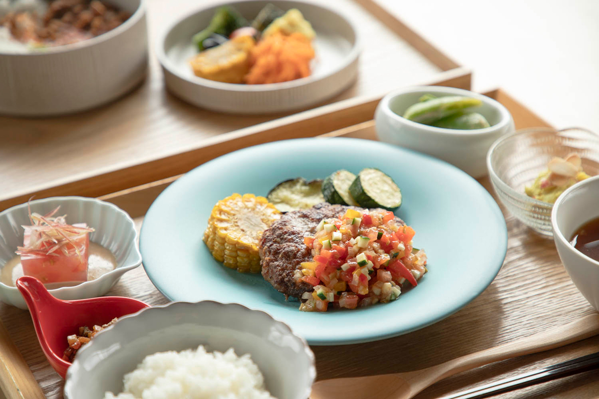
KOYO BASE
- Адрес
- префектура Гифу, Токи, Идзумимати-Кудзири, 1496-5
Фото: Норихито Судзуки.